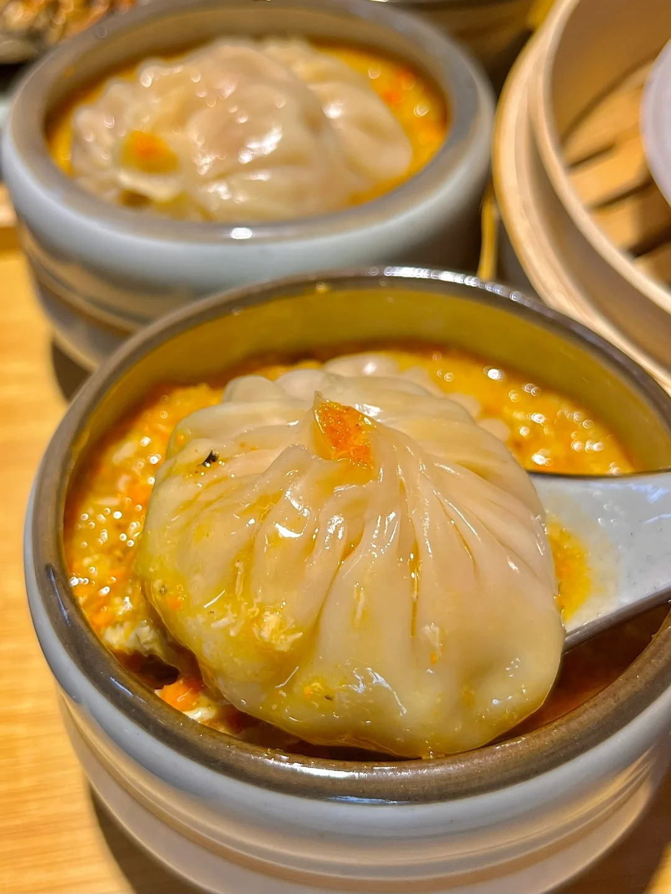
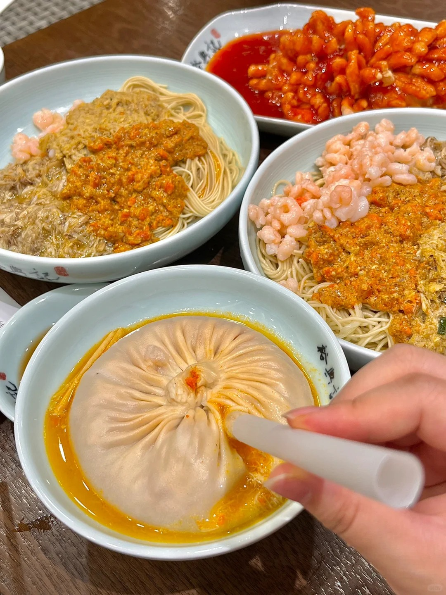
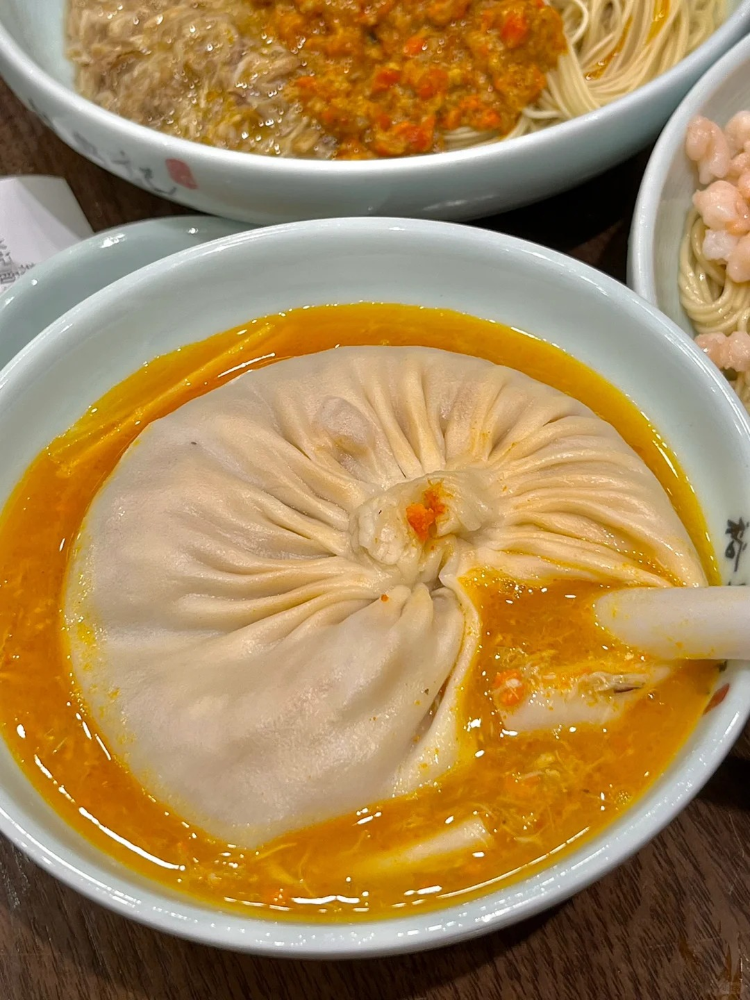

Introduction
Shanghai Crab Roe Buns (Xie Huang Bao) are a distinctive regional delicacy that embodies the essence of Shanghai's culinary culture. These steamed buns feature a delicate wrapping that encases a succulent filling of pork and crab roe, creating an explosion of flavor with every bite.
Historical Background
Crab Roe Buns represent a beautiful fusion of Shanghai's dining traditions. They evolved from traditional xiaolongbao (soup dumplings) originating in Jiangsu province during the Qing Dynasty. As the dish made its way to Shanghai, local chefs enhanced it by incorporating crab roe and meat, ingredients highly prized in the coastal region.
Over time, Shanghai's rising prominence as a commercial hub allowed its cuisine to flourish, with dishes like Crab Roe Buns becoming emblematic of the region's food culture. These buns were traditionally associated with autumn when hairy crabs from nearby Yangcheng Lake reach their peak season, making the crab roe especially flavorful.
Preparation Method
- Dough Preparation: Mix flour with water to form a dough, knead until smooth, then allow it to rest for about 30 minutes. This process ensures the bun wrappers will have the right elasticity and texture.
- Filling Mixture: Finely chop fresh pork, mix with crab roe and crab meat. Add green onions, ginger, salt, sugar, soy sauce, and a splash of Shaoxing wine for aromatic depth.
- Incorporating Gelatin: Mix in small pieces of pork skin aspic (gelatin cubes made from pork skin). These will melt during steaming, creating the signature soup inside the buns.
- Wrapper Forming: Roll the rested dough into a long cylinder, cut into small pieces, and press each piece into a flat circle with thin edges and a slightly thicker center.
- Pleating Technique: Place a spoonful of filling in the center of each wrapper, then carefully pleat the edges to create the distinctive pattern, typically with 14-18 pleats. The pleating technique not only creates the bun's beautiful appearance but also strengthens the structure to hold the soup.
- Steaming Process: Arrange the buns in a bamboo steamer lined with cabbage leaves or parchment paper, making sure they don't touch. Steam over high heat for about 10 minutes until the buns are translucent and fully cooked.
Tasting Notes
The perfect Crab Roe Bun has a thin, slightly translucent skin with a tender but resilient texture. The first bite releases a burst of rich, savory broth with the distinctive sweetness of crab. The filling combines the umami richness of crab roe with the juicy tenderness of pork, creating layers of flavor that unfold as you eat.
Traditionally, these buns are served with a dipping sauce of black vinegar, sometimes enhanced with thin ginger slices. The gentle acidity of the vinegar cuts through the richness of the crab and pork, creating a perfectly balanced bite.
Gallery



